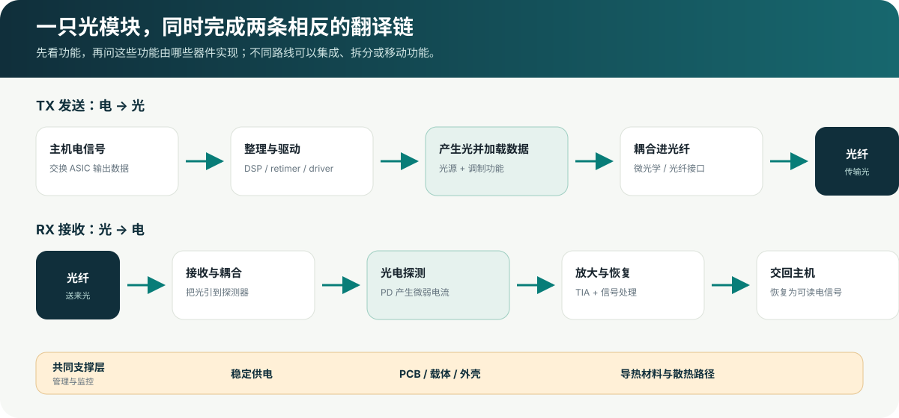
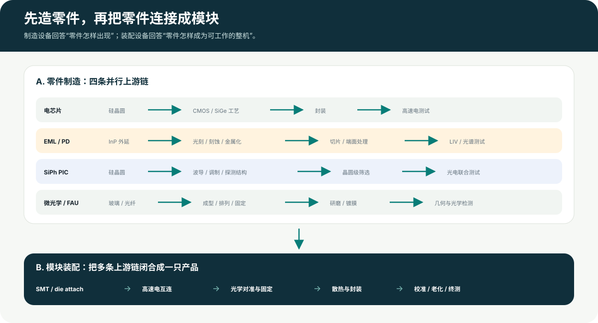

速度越高、距离越长，电越难传
高速电信号在电路板和连接器中传得越远，损耗和失真越难控制。光纤更适合把大量数据送到另一台设备、另一个机柜或更远的位置。
从双向光电转换出发，沿功能、组件、连接、制造和装配逐层展开。
交换芯片只能直接处理电信号，光纤里传输的却是光。它们不能直接“对话”，所以中间需要一个翻译盒：送数据时把电信号写到光上，收数据时再把光信号还原成电信号。

高速电信号在电路板和连接器中传得越远，损耗和失真越难控制。光纤更适合把大量数据送到另一台设备、另一个机柜或更远的位置。
发送时，它把芯片给出的电信号变成可以进入光纤的光；接收时，它把光纤送来的微弱光信号恢复成芯片能读懂的电信号。
所有方案都要完成“整理电、把数据写到光上、送入光纤、接住光、恢复电”这些动作，但具体使用的器件和摆放方式可以不同。
后文出现的各种英文缩写，本质上都在回答两个问题：哪个零件来完成某项动作，以及这些零件放在哪里、怎样连接。
框图把关系讲清楚，但会把所有东西画成差不多大的方框。现实中，完整模块是可以插进交换机面板的金属盒；盒内同时容纳电路板、光学组件和散热结构；真正完成发光与收光的半导体裸片则小得多。下面的照片按“外部 → 接口 → 内部组件 → 裸片 → 共封装”排列。

左端露出的金手指插入设备内部，与主机交换高速电信号；金属外壳负责屏蔽、保护和传热；另一端接光纤并带有拉环。外壳里面才是 DSP、驱动、光器件、探测器和控制电路。
对象：AddOn Networks OSFP-800GB-DR8-AO。图源：AddOn Networks；点击图片查看原始产品页。
黑色端面的微小孔位对应多根光纤，常用于并行光连接。它解释了为什么某些 DR8/SR8 模块会采用宽一些的矩形光口；但并非每种模块都用 MPO/MTP，WDM 产品常见双工 LC 等接口。
作者：Kirnehkrib；CC BY-SA 3.0；点击图片查看许可与原图。
照片中的金色区域主要是电极和焊盘，真正的光波导结构位于芯片内部。EML 把 DFB 激光器与电吸收调制器做在同一芯片上；仅凭外观不能读出外延层、光栅或具体性能。
对象：Coherent 28/56 GBd FR1/FR4 EML 产品族。图源：Coherent。
光电探测器把进入的光转换为微弱电流，再交给 TIA 放大。这里展示的是一个具名 200G 产品例子；不同路线可能使用不同探测器材料、结构、通道数和封装方式。
对象：Coherent 200G photodiode with integrated microlens。图源：Coherent。
右侧多根彩色细线是成排光纤，前端组件把它们固定在确定的位置和角度。FAU 是“芯片怎样接到光纤”的一种实现，不应被写成每只光模块必有的统一零件。
对象：SENKO Fiber Array Assemblies。图源：SENKO；原图带有产品渲染/剖视表达。
右侧金手指接主机，中央是控制与信号电路，左侧橙色软板连接 TOSA/ROSA 光学组件。它是 10G SFP+ 的拆解，不代表现代 800G 的器件数量或布局；它的价值是把“金属盒里面确实同时有电路板和光学组件”直观展示出来。
对象：XZSNET 10GBASE-LR SFP+ 拆解。图源：iFixit；点击图片查看完整拆解步骤。
中央大芯片是交换 ASIC，周边成排的小型光学封装靠近它布置。这张图解释的是“光学放在哪里”的变化，并不等同于 EML/SiPh 这种“用什么光子平台”的选择。
对象：NVIDIA Quantum-X Photonics / Spectrum-X Photonics。图源：NVIDIA。NVIDIA 在这张 1.6Tb/s 架构比较图中，把传统可插拔例子画为每 1.6Tb 8 个外调制激光器，把其 CPO 例子画为每 1.6Tb 2 个连续波激光器。它可以回答“这个 NVIDIA 对比案例如何配置”，不能晋升为“所有硅光固定两个 laser”。
查看 NVIDIA 原文与边界 →
先沿着数据走一遍：发送方向负责“电变光”，接收方向负责“光变电”。供电、管理、外壳和散热则让这两条通道能够稳定工作。在真实产品中，有些功能由独立零件完成，有些会被集成在同一块芯片里。
修整在高速走线中变形的电信号，并校准信号时序。部分轻量化方案会减少模块内这一环节。
它处理电，不负责发光；并非所有模块都采用相同配置把前级电信号变成适合激光器或调制器使用的高速电驱动。
它负责“怎么驱动”，不等于提供全部光功率光源负责产生光，调制环节负责把数据加载到光上。两者可以做在一起，也可以由不同器件完成。
具体器件路线将在第 06 章再展开有些产品会让多个波长共用一根光纤，因此需要在发送端合并、在接收端分开。
并行光方案与波分方案对此需求不同把芯片或光器件发出的光准确送入光纤，也把光纤送来的光引到接收器。
可能使用透镜、光纤阵列或芯片上的耦合结构接收端的“眼睛”：感知到达的光，并把它转换成很微弱的电流。
不同距离和灵敏度要求会影响探测器选择把探测器产生的微弱电流转换成更容易处理的电压信号，并完成初步放大。
通常尽量靠近探测器，以控制互连影响负责配置、监控和告警，让主机能够读取模块温度、光功率和运行状态。
它服务整机运行，不处在主要的光电转换链上承载并连接所有零件，保护内部结构，同时把芯片和光源产生的热量传出去。
具体零件组合取决于产品功耗、形态和温度要求列出零件只是第一步。电信号要在芯片和电路板之间低失真地传递，光要在光源、光路和光纤之间精确对准，热量还要顺利传到外壳。下面展示常见连接方法；实际产品会因器件和封装不同而改变。
高速电信号从设备进入模块，供电和管理信号也通过接口进入。
高速电信号在不同电芯片之间传递。速度越高，互连长度、焊点和封装结构越需要精确控制。
驱动芯片提供适合发射器件的高速电压和电流变化，让数据能够被写到光上。
采用独立光源时，需要把光稳定、高效地送进芯片上的微型光路；不同平台也可能采用其他光源集成方式。
芯片中的光束与光纤中的光束形状不同，需要微型光学结构完成匹配和对准。
探测器产生的电流很弱，因此需要用很短的连接送到旁边的放大器，再交给后续电路处理。
这里要分清两类工厂工作：芯片和光学厂先把材料做成一个个可用零件；光模块厂再把这些零件固定、连接、对准、散热和测试，最终做成可以插入设备使用的产品。

电芯片厂负责处理和放大电信号，光芯片厂负责发光、调制、分光或探测，精密光学厂负责把光送到正确的位置，模块厂负责把它们装在一起并测试。下方工艺名是供继续查阅的细节，不需要一次记住。
以电吸收调制激光器（EML）为例：它把激光器和调制器做在同一块磷化铟芯片上。不同厂商的具体结构和工序并不完全相同。
硅光子芯片（SiPh PIC）可以在一块芯片上形成导光、调制、合分光和部分探测功能。激光光源可能放在芯片外，也可能通过其他方式与芯片集成。
信号处理、驱动和接收放大芯片通常沿用硅基半导体制造平台。它们进入光模块以后，难点更多落在高速封装、短距离电连接和光电联合测试。
光纤阵列组件（FAU）只是其中一种实现。不同产品还可能使用球透镜、渐变折射率透镜或微透镜阵列，因此不能把它们都画成同一条工艺线。
| 工厂动作 | 连接对象 | 典型设备类别 | 路线敏感点 |
|---|---|---|---|
| 贴装芯片和表面元件 | 电芯片、光芯片和承载结构 | 贴片机、固晶机、回流焊和自动光学检查设备 | 芯片是裸片还是已封装、贴装精度和可承受温度 |
| 连接高速电信号 | 驱动/放大芯片与光器件 | 引线键合机、倒装键合机和热压/回流设备 | 连接越长、接点越密集，高速信号越难保持完整 |
| 对准并固定光路 | 光源或光芯片与透镜、光纤 | 多轴精密定位、主动/被动对准和点胶/键合设备 | 光怎样进出芯片、通道数量和允许的光损耗 |
| 安装外壳和散热结构 | 发热器件、导热材料、壳体和散热器 | 点胶、贴合、锁附和热测试设备 | 总功耗、工作温度范围以及是否需要主动温控 |
| 完成光电联合测试 | 发射端、接收端和整只模块 | 发光、光谱、光功率、误码、波形和老化测试设备 | 模块速率、纠错方式、通道数量和并行测试能力 |